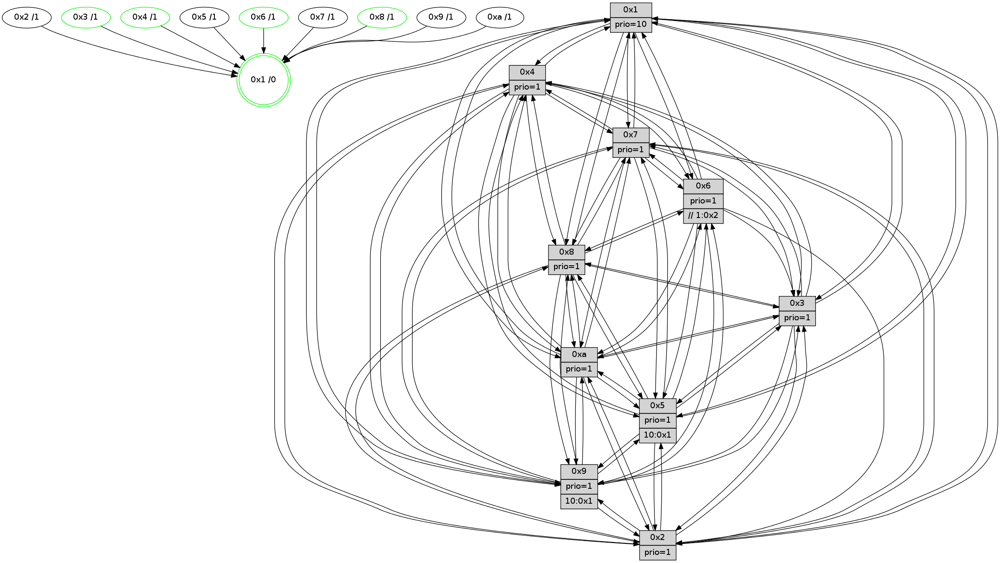

>> << IDX [start] -100 -25 -5 +0 +5 +25 +100 [1555.41100597]
 Previous packets
1550.001312 [STC(1) #0.278 tree-change,inconsistent-stability,stable,to-color d=0]
1550.002940 [Hello(2): seq=984 sym=4,5,7,6,3,9,8,10,1 sysInfo=hasWarning stat=4:4,3,9,14/5:15,15,12,4/7:6,6,15,3/6:4,14,3,1/3:4,3,1,0/9:15,14,4,11/8:0,2,7,0/10:0,13,4,12/1:2,7,8,0]
1550.008961 [Color(5) seq=524 @0:0 prio=1 >10.@1,1.@2,1.@3,1.@4]
1550.012819 [Hello(6): seq=988 sym=3,2,5,4,7,9,8,10,1 sysInfo=hasWarning stat=3:14,6,11,0/2:0,11,4,1/5:5,12,0,6/4:2,14,9,9/7:2,7,9,1/9:5,14,12,12/8:6,12,3,10/10:10,11,5,14/1:11,9,15,1]
1550.017225 [Color(6) seq=620 @0:0 prio=1 >>1.@2,1.@3,1.@4]
1550.018821 [Color(2) seq=564 @0:0 prio=1]
1550.022811 [Color(3) seq=617 @0:0 prio=1]
----------------------------------------------------------------------
1550.682224 beacon01(faad) #0 coord=01,02,03,04,05,06,07,0a,09,08 cycle=688.0ms assoc
-- color-indic=1 64 a7 df
1550.692207 beacon02(faad) #0 coord=01,02,03,04,05,06,07,0a,09,08 cycle=688.0ms assoc 64 34 ee
1550.702208 beacon03(faad) #0 coord=01,02,03,04,05,06,07,0a,09,08 cycle=688.0ms assoc 64 4e a3
1550.712209 beacon04(faad) #0 coord=01,02,03,04,05,06,07,0a,09,08 cycle=688.0ms assoc 64 39 49
1550.722208 beacon05(faad) #0 coord=01,02,03,04,05,06,07,0a,09,08 cycle=688.0ms assoc 64 43 04
1550.732208 beacon06(faad) #0 coord=01,02,03,04,05,06,07,0a,09,08 cycle=688.0ms assoc 64 cd d3
1550.742209 beacon07(faad) #0 coord=01,02,03,04,05,06,07,0a,09,08 cycle=688.0ms assoc 64 b7 9e
1550.752212 beacon0a(faad) #0 coord=01,02,03,04,05,06,07,0a,09,08 cycle=688.0ms assoc 64 c6 95
1550.772212 beacon08(faad) #0 coord=01,02,03,04,05,06,07,0a,09,08 cycle=688.0ms assoc 64 32 0f
1550.783968 [Hello(4): seq=988 sym=5,8,6,2,3,9,7,10,1 sysInfo=hasWarning stat=5:2,12,9,4/8:6,3,0,0/6:7,6,6,4/2:11,8,12,3/3:2,14,4,1/9:11,8,12,3/7:6,1,2,0/10:14,14,5,14/1:2,6,15,1]
1550.786952 [Hello(7): seq=988 sym=2,3,5,6,8,4,9,10,1 sysInfo=hasWarning stat=2:14,1,9,6/3:2,9,14,6/5:2,11,11,5/6:9,8,10,15/8:15,2,2,1/4:5,7,2,0/9:9,8,4,3/10:6,5,2,8/1:0,11,11,0]
1550.791570 [Hello(9): seq=932 sym=2,5,3,4,7,6,8,10,1 sysInfo=hasWarning stat=2:12,3,14,13/5:15,8,6,0/3:10,8,11,7/4:10,8,7,3/7:3,1,8,5/6:10,3,13,3/8:9,1,5,9/10:8,11,8,0/1:10,12,14,1]
1550.794727 [STC(9)->1 #0.278 to-color d=1]
1550.796138 [STC(7)->1 #0.278 tree-change,inconsistent-stability,to-color d=1]
1550.798003 [Hello(8): seq=932 sym=5,2,3,7,9,6,4,10,1 sysInfo=hasWarning stat=5:4,15,7,3/2:11,14,2,14/3:1,14,8,6/7:6,3,2,0/9:5,0,8,6/6:12,15,5,3/4:2,7,13,2/10:14,13,14,5/1:9,12,15,0]
1550.801341 [Hello(10): seq=921 sym=6,2,3,8,7,5,9,4,1 sysInfo=hasWarning stat=6:0,2,11,7/2:10,7,13,2/3:1,13,4,15/8:3,12,0,6/7:12,5,15,10/5:0,11,5,3/9:6,5,0,0/4:13,8,10,3/1:11,2,14,1]
1550.804465 [STC(10)->1 #0.278 to-color d=1]
1550.806164 [STC(8)->1 #0.278 tree-change,inconsistent-stability,stable,to-color d=1]
1550.809719 [TreeStatus(8)-.->1 #0.278 tree-change,inconsistent-stability,stable child=1]
1550.811345 [STC(4)->1 #0.278 tree-change,inconsistent-stability,stable,to-color d=1]
1550.815222 [TreeStatus(4)-.->1 #0.278 tree-change,inconsistent-stability,stable child=1]
----------------------------------------------------------------------
1551.470354 beacon01(faad) #0 coord=01,02,03,04,05,06,07,0a,09,08 cycle=688.0ms assoc
-- color-indic=1 64 63 d1
1551.480337 beacon02(faad) #0 coord=01,02,03,04,05,06,07,0a,09,08 cycle=688.0ms assoc 64 f0 e0
1551.490335 beacon03(faad) #0 coord=01,02,03,04,05,06,07,0a,09,08 cycle=688.0ms assoc 64 8a ad
1551.500335 beacon04(faad) #0 coord=01,02,03,04,05,06,07,0a,09,08 cycle=688.0ms assoc 64 fd 47
1551.510337 beacon05(faad) #0 coord=01,02,03,04,05,06,07,0a,09,08 cycle=688.0ms assoc 64 87 0a
1551.520338 beacon06(faad) #0 coord=01,02,03,04,05,06,07,0a,09,08 cycle=688.0ms assoc 64 09 dd
1551.530338 beacon07(faad) #0 coord=01,02,03,04,05,06,07,0a,09,08 cycle=688.0ms assoc 64 73 90
1551.540341 beacon0a(faad) #0 coord=01,02,03,04,05,06,07,0a,09,08 cycle=688.0ms assoc 64 02 9b
1551.560343 beacon08(faad) #0 coord=01,02,03,04,05,06,07,0a,09,08 cycle=688.0ms assoc 64 f6 01
1551.571257 [TreeStatus(10)-.->1 #0.278 tree-change,inconsistent-stability child=1]
1551.575800 [Hello(5): seq=989 sym=7,6,4,2,1,9,8,10,3 sysInfo=hasWarning stat=7:1,6,2,1/6:4,5,2,2/4:11,13,6,1/2:3,5,0,0/1:8,9,7,0/9:6,7,12,12/8:5,5,7,9/10:15,1,0,10/3:3,5,1,0]
1551.579586 [Color(5) seq=525 @0:0 prio=1 >10.@1,1.@2,1.@3,1.@4]
1551.581417 [Hello(2): seq=985 sym=4,5,7,6,3,9,8,10,1 sysInfo=hasWarning stat=4:5,3,10,15/5:15,15,12,4/7:7,6,0,3/6:4,14,3,1/3:4,4,1,0/9:0,14,5,11/8:1,2,8,1/10:1,13,5,12/1:3,7,8,0]
1551.584141 [TreeStatus(9)-.->1 #0.278 tree-change,inconsistent-stability child=1]
1551.586046 [Hello(6): seq=989 sym=3,2,5,4,7,9,8,10,1 sysInfo=hasWarning stat=3:14,7,11,0/2:0,12,4,1/5:5,12,0,6/4:3,14,10,10/7:3,7,10,1/9:6,14,13,12/8:7,12,4,11/10:11,11,6,14/1:12,9,15,1]
1551.588566 [Hello(3): seq=989 sym=1,7,6,2,4,8,9,10,5 sysInfo=hasWarning stat=1:9,7,1,0/7:6,3,0,0/6:3,12,3,2/2:2,6,1,0/4:7,6,2,15/8:13,3,9,10/9:0,7,9,2/10:3,10,15,6/5:1,14,8,3]
1551.592007 [Color(3) seq=618 @0:0 prio=1]
1551.593827 [Color(6) seq=621 @0:0 prio=1 >>1.@2,1.@3,1.@4]
1551.596031 [Color(2) seq=565 @0:0 prio=1]
----------------------------------------------------------------------
1552.258484 beacon01(faad) #0 coord=01,02,03,04,05,06,07,0a,09,08 cycle=688.0ms assoc
-- color-indic=1 64 df d4
1552.268468 beacon02(faad) #0 coord=01,02,03,04,05,06,07,0a,09,08 cycle=688.0ms assoc 64 4c e5
1552.278468 beacon03(faad) #0 coord=01,02,03,04,05,06,07,0a,09,08 cycle=688.0ms assoc 64 36 a8
1552.288467 beacon04(faad) #0 coord=01,02,03,04,05,06,07,0a,09,08 cycle=688.0ms assoc 64 41 42
1552.298468 beacon05(faad) #0 coord=01,02,03,04,05,06,07,0a,09,08 cycle=688.0ms assoc 64 3b 0f
1552.308468 beacon06(faad) #0 coord=01,02,03,04,05,06,07,0a,09,08 cycle=688.0ms assoc 64 b5 d8
1552.318467 beacon07(faad) #0 coord=01,02,03,04,05,06,07,0a,09,08 cycle=688.0ms assoc 64 cf 95
1552.328471 beacon0a(faad) #0 coord=01,02,03,04,05,06,07,0a,09,08 cycle=688.0ms assoc 64 be 9e
1552.348472 beacon08(faad) #0 coord=01,02,03,04,05,06,07,0a,09,08 cycle=688.0ms assoc 64 4a 04
1552.359628 [Hello(7): seq=989 sym=2,3,5,6,8,4,9,10,1 sysInfo=hasWarning stat=2:15,2,9,6/3:3,10,14,6/5:3,12,11,5/6:10,9,10,15/8:0,2,3,2/4:5,7,3,1/9:9,8,4,4/10:7,5,3,9/1:0,11,11,0]
1552.363305 [Hello(10): seq=922 sym=6,2,3,8,7,5,9,4,1 sysInfo=hasWarning stat=6:1,3,11,7/2:11,8,13,2/3:2,14,4,15/8:3,12,1,7/7:12,5,15,10/5:1,12,5,3/9:6,5,0,1/4:13,8,11,4/1:11,2,14,1]
1552.367004 [Hello(8): seq=933 sym=5,2,3,7,9,6,4,10,1 sysInfo=hasWarning stat=5:5,0,7,3/2:12,15,2,14/3:2,15,8,6/7:6,3,2,0/9:5,0,8,7/6:13,0,5,3/4:2,7,14,3/10:14,13,14,5/1:9,12,15,0]
1552.370935 [Color(1) seq=669 @0:0 prio=10]
1552.372255 [Hello(4): seq=989 sym=5,8,6,2,3,9,7,10,1 sysInfo=hasWarning stat=5:3,13,9,4/8:6,3,0,0/6:8,7,6,4/2:12,9,12,3/3:3,15,4,1/9:11,8,12,4/7:6,1,2,0/10:14,14,5,15/1:2,6,15,1]
1552.375720 [Hello(9): seq=933 sym=2,5,3,4,7,6,8,10,1 sysInfo=hasWarning stat=2:12,4,14,13/5:15,8,6,0/3:11,9,11,7/4:10,8,8,4/7:3,1,9,5/6:11,4,13,3/8:10,1,6,10/10:9,11,9,0/1:10,12,14,1]
----------------------------------------------------------------------
1553.046615 beacon01(faad) #0 coord=01,02,03,04,05,06,07,0a,09,08 cycle=688.0ms assoc
-- color-indic=1 64 eb cc
1553.056597 beacon02(faad) #0 coord=01,02,03,04,05,06,07,0a,09,08 cycle=688.0ms assoc 64 78 fd
1553.066596 beacon03(faad) #0 coord=01,02,03,04,05,06,07,0a,09,08 cycle=688.0ms assoc 64 02 b0
1553.076598 beacon04(faad) #0 coord=01,02,03,04,05,06,07,0a,09,08 cycle=688.0ms assoc 64 75 5a
1553.086597 beacon05(faad) #0 coord=01,02,03,04,05,06,07,0a,09,08 cycle=688.0ms assoc 64 0f 17
1553.096597 beacon06(faad) #0 coord=01,02,03,04,05,06,07,0a,09,08 cycle=688.0ms assoc 64 81 c0
1553.106598 beacon07(faad) #0 coord=01,02,03,04,05,06,07,0a,09,08 cycle=688.0ms assoc 64 fb 8d
1553.116606 beacon0a(faad) #0 coord=01,02,03,04,05,06,07,0a,09,08 cycle=688.0ms assoc 64 8a 86
1553.136603 beacon08(faad) #0 coord=01,02,03,04,05,06,07,0a,09,08 cycle=688.0ms assoc 64 7e 1c
1553.147835 [Hello(1): seq=899 sym=4,2,9,5,10,3,8,6,7 sysInfo=coloring-mode-on,ColoringModeRequestCalled stat=4:14,2,12,5/2:3,1,3,7/9:6,8,5,4/5:13,9,11,11/10:3,13,15,9/3:14,1,12,13/8:10,0,5,8/6:7,10,8,5/7:1,3,15,3]
1553.151174 [Hello(5): seq=990 sym=7,6,4,2,1,9,8,10,3 sysInfo=hasWarning stat=7:2,6,2,1/6:5,6,2,2/4:12,13,6,1/2:4,6,0,0/1:8,10,7,0/9:7,7,12,13/8:6,5,7,9/10:0,1,0,11/3:4,6,1,0]
1553.156903 [Color(8) seq=577 @0:0 prio=1]
1553.158827 [Color(3) seq=619 @0:0 prio=1]
1553.161835 [Hello(2): seq=986 sym=4,5,7,3,9,8,10,1 sysInfo=hasWarning stat=4:6,3,10,15/5:15,15,12,4/7:8,6,0,3/3:4,4,1,0/9:1,14,5,11/8:2,2,8,1/10:2,13,5,13/1:3,8,8,0]
1553.165814 [Color(2) seq=566 @0:0 prio=1]
1553.167059 [Color(4) seq=517 @0:0 prio=1]
1553.169777 [Color(6) seq=622 @0:0 prio=1 >>1.@2,1.@3,1.@4]
1553.172447 [Color(5) seq=526 @0:0 prio=1 >10.@1,1.@2,1.@3,1.@4]
----------------------------------------------------------------------
1553.834745 beacon01(faad) #0 coord=01,02,03,04,05,06,07,0a,09,08 cycle=688.0ms assoc
-- color-indic=1 64 57 c9
1553.844728 beacon02(faad) #0 coord=01,02,03,04,05,06,07,0a,09,08 cycle=688.0ms assoc 64 c4 f8
1553.854728 beacon03(faad) #0 coord=01,02,03,04,05,06,07,0a,09,08 cycle=688.0ms assoc 64 be b5
1553.864727 beacon04(faad) #0 coord=01,02,03,04,05,06,07,0a,09,08 cycle=688.0ms assoc 64 c9 5f
1553.874729 beacon05(faad) #0 coord=01,02,03,04,05,06,07,0a,09,08 cycle=688.0ms assoc 64 b3 12
1553.884730 beacon06(faad) #0 coord=01,02,03,04,05,06,07,0a,09,08 cycle=688.0ms assoc 64 3d c5
1553.894728 beacon07(faad) #0 coord=01,02,03,04,05,06,07,0a,09,08 cycle=688.0ms assoc 64 47 88
1553.904732 beacon0a(faad) #0 coord=01,02,03,04,05,06,07,0a,09,08 cycle=688.0ms assoc 64 36 83
1553.924736 beacon08(faad) #0 coord=01,02,03,04,05,06,07,0a,09,08 cycle=688.0ms assoc 64 c2 19
1553.936531 [Hello(10): seq=923 sym=6,2,3,8,7,5,9,4,1 sysInfo=hasWarning stat=6:2,4,11,7/2:12,9,13,2/3:2,15,4,15/8:4,13,1,7/7:12,5,15,10/5:2,13,5,3/9:7,5,0,1/4:14,9,11,4/1:12,3,14,1]
1553.938975 [Hello(8): seq=934 sym=5,2,3,7,9,6,4,10,1 sysInfo=hasWarning stat=5:5,1,7,3/2:13,0,2,14/3:2,0,8,6/7:6,3,2,0/9:6,0,8,7/6:13,1,5,3/4:3,8,14,3/10:14,13,14,5/1:10,13,15,0]
1553.941402 [STC(1) #0.279 tree-change,inconsistent-stability,stable,to-color d=0]
1553.943826 [Hello(7): seq=990 sym=2,3,5,6,8,4,9,10,1 sysInfo=hasWarning stat=2:0,3,9,6/3:3,11,14,6/5:4,13,11,5/6:11,10,10,15/8:1,3,3,2/4:6,8,3,1/9:10,8,4,4/10:8,5,3,9/1:1,12,11,0]
1553.948328 [Hello(4): seq=990 sym=5,8,6,2,3,9,7,10,1 sysInfo=hasWarning stat=5:3,14,9,4/8:6,3,0,0/6:8,8,6,4/2:12,9,12,3/3:3,15,4,1/9:12,8,12,4/7:6,1,2,0/10:14,14,5,15/1:3,6,15,1]
1553.952767 [Hello(9): seq=934 sym=2,5,3,4,7,6,8,10,1 sysInfo=hasWarning stat=2:13,5,14,13/5:0,9,6,0/3:11,10,11,7/4:10,9,8,4/7:3,1,9,5/6:11,5,13,3/8:10,2,6,10/10:9,11,9,0/1:11,12,14,1]
----------------------------------------------------------------------
1554.622876 beacon01(faad) #0 coord=01,02,03,04,05,06,07,0a,09,08 cycle=688.0ms assoc
-- color-indic=1 64 93 c7
1554.632857 beacon02(faad) #0 coord=01,02,03,04,05,06,07,0a,09,08 cycle=688.0ms assoc 64 00 f6
1554.642859 beacon03(faad) #0 coord=01,02,03,04,05,06,07,0a,09,08 cycle=688.0ms assoc 64 7a bb
1554.652859 beacon04(faad) #0 coord=01,02,03,04,05,06,07,0a,09,08 cycle=688.0ms assoc 64 0d 51
1554.662857 beacon05(faad) #0 coord=01,02,03,04,05,06,07,0a,09,08 cycle=688.0ms assoc 64 77 1c
1554.672857 beacon06(faad) #0 coord=01,02,03,04,05,06,07,0a,09,08 cycle=688.0ms assoc 64 f9 cb
1554.682859 beacon07(faad) #0 coord=01,02,03,04,05,06,07,0a,09,08 cycle=688.0ms assoc 64 83 86
1554.692863 beacon0a(faad) #0 coord=01,02,03,04,05,06,07,0a,09,08 cycle=688.0ms assoc 64 f2 8d
1554.712865 beacon08(faad) #0 coord=01,02,03,04,05,06,07,0a,09,08 cycle=688.0ms assoc 64 06 17
1554.724734 [Hello(1): seq=900 sym=4,2,9,5,10,3,8,6,7 sysInfo=coloring-mode-on,ColoringModeRequestCalled stat=4:14,3,12,5/2:4,2,3,7/9:7,8,5,4/5:14,10,11,11/10:4,13,15,9/3:15,2,12,13/8:10,1,5,8/6:7,11,8,5/7:1,3,15,3]
1554.727592 [Hello(5): seq=991 sym=7,6,4,2,1,9,8,10,3 sysInfo=hasWarning stat=7:3,6,2,1/6:5,6,2,2/4:13,13,6,1/2:4,6,0,0/1:9,10,8,0/9:8,7,12,13/8:6,5,7,9/10:1,1,0,11/3:4,6,1,0]
1554.730275 [Hello(2): seq=987 sym=4,5,7,3,9,8,10,1 sysInfo=hasWarning stat=4:7,4,10,15/5:0,0,12,4/7:9,6,0,3/3:4,4,1,0/9:2,14,5,11/8:2,2,8,1/10:3,13,5,13/1:4,8,9,0]
1554.733964 [Hello(3): seq=991 sym=1,7,2,4,8,9,10,5 sysInfo=hasWarning stat=1:11,9,2,0/7:8,3,0,0/2:3,8,1,0/4:8,7,2,15/8:14,3,9,10/9:2,7,9,2/10:5,10,15,6/5:2,15,8,3]
1554.736357 [Color(4) seq=518 @0:0 prio=1]
1554.738894 [STC(3)->1 #0.279 tree-change,inconsistent-stability,stable,to-color d=1]
1554.740813 [Hello(6): seq=991 sym=3,2,5,4,7,9,8,10,1 sysInfo=hasWarning stat=3:14,7,11,0/2:0,13,4,1/5:6,13,0,6/4:4,14,10,10/7:5,7,10,1/9:8,14,13,12/8:8,12,4,11/10:13,11,6,15/1:13,11,0,1]
1554.743938 [STC(6)->1 #0.279 tree-change,inconsistent-stability,stable,to-color d=1]
1554.745601 [STC(8)->1 #0.279 tree-change,inconsistent-stability,stable,to-color d=1]
1554.747800 [Color(6) seq=623 @0:0 prio=1 >>1.@2,1.@3,1.@4]
1554.750395 [Color(8) seq=578 @0:0 prio=1]
1554.752794 [STC(5)->1 #0.279 to-color d=1]
1554.754830 [STC(2)->1 #0.279 to-color d=1]
1554.760471 [Color(3) seq=620 @0:0 prio=1]